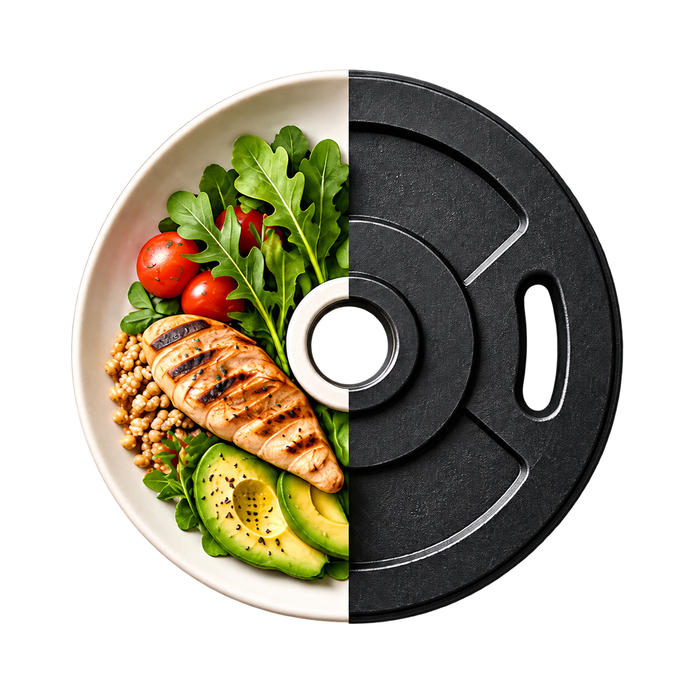

Last updated 16 September 2026
Plate is a personal health and training log. The app stores almost nothing itself: what you record is sent to a server and kept there.
This matters more than anything else on this page, because it decides who can see your data.
The app talks to one server and only one:
api.srijanpokharel.com. There is no setting to change it. That server
is operated privately by Srijan Pokharel and runs on hardware in a private
residence. As its administrator, he has technical access to the database,
including your entries. Use the app only if you are comfortable with
that.
The server software is open source, so you can read exactly what it does, and run your own copy if you'd rather — but that requires building the app yourself from source, because the shipped version has no address field.
Accounts are created either by the administrator or by signing up with an invite code he issues. There is no open public sign-up.
| Data | Where it comes from | Why |
|---|---|---|
| Email address, display name, date of birth, sex | You, at sign-up | Sign-in, and the age and sex inputs the body-fat formula needs |
| Workouts — exercises, sets, reps, weight | You | The training log and its statistics |
| Body weight and caliper skinfold measurements | You | Weight trends and estimated body fat |
| Steps, sleep stages, resting heart rate, active energy | Apple Health, with your permission | Shown alongside your training on the daily and calendar views |
| Calories and macronutrients | Healthifyme, only if the server operator configured it | Nutrition tracking |
| Gym check-in times | LA Fitness, only if the server operator configured it | Attendance history |
Plate reads steps, sleep analysis, resting heart rate and active energy. It never writes anything to Apple Health.
HealthKit data is used only to display your own history inside the app. It is never used for advertising or marketing, never sold or shared with data brokers, and never disclosed to third parties for their own purposes.
You grant this access explicitly in iOS and can revoke it at any time in Settings → Privacy & Security → Health → Plate. The app keeps working without it; the Apple Health figures simply stop updating.
Data is kept until it is deleted. Individual entries can be removed in the app. Deleting an account permanently deletes everything belonging to it — workouts, body measurements, Apple Health days, nutrition and check-ins — in the same operation.
You can delete your own account at any time from Settings → Delete my account in the app, which removes everything in one operation. If you would rather it were done for you, email the address below.
Plate is not directed at children under 13, and accounts are not created for them.
If this policy changes materially, the date at the top of this page is updated. The current version is always published here.
Questions, or a deletion request: pokharelsrj@gmail.com
The source code for both the app and the server is at github.com/pokharelsrj/plate.